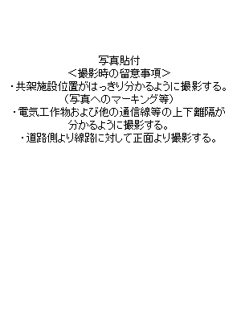

| 既設共架者 | |
|---|---|
| ① | |
| ② | |
| ③ | |
| ④ | |
| ⑤ | |
| ⑥ | |
| ⑦ |
1. 配電設備の施設状況
| 支持物種類 | 長さ | 強度 | |
|---|---|---|---|
| 高圧線 | 低圧線 | 変圧器 | 開閉器 |
2. 共架施設状況と希望位置
【共架予定位置】
単独
( と の中間)
一束化
( と一束化)
【一束化予定事業者名】
[]
3. 共架位置と測定結果
| 配電設備との隔離距離 | 通信線との隔離距離 | 共架予定位置の地上高 | |
|---|---|---|---|
| 直近上位 | 直近下位 | ||
【しゅん工後測定結果】
| 配電設備との隔離距離 | 通信線との隔離距離 | 共架予定位置の地上高 | |
|---|---|---|---|
| 直近上位 | 直近下位 | ||
4.施設形態
【しゅん工後入力】
| 施設形態 | 中電柱番号 | 径間 | 線下状況 | 通信元との角度 | 外径 | 自重 | 通信線 | 径間途中の隔離距離 | 通信元との角度 | ||||
|---|---|---|---|---|---|---|---|---|---|---|---|---|---|
| 吊線 | 通信線 | 吊線 | 通信線 | 低圧線 | 電力引込線 | ||||||||
| 通信元 | |||||||||||||
| 通信先① | |||||||||||||
| 通信先② | |||||||||||||
| 通信先③ | |||||||||||||
5.槍出し金具の使用
| 使用の有無 |
|---|
→
※使用する理由
[]
6.開閉器操作紐の移設
| 移設の要否 |
|---|
※最終判断は中電
にて実施する
| 【特記事項】（配電設備の改修要望内容・しゅん工事の変更理由） |
|---|
| 撮影日 | 令和 年 月 日 |
工事前写真
|
|
|---|---|---|---|
|  | |||
| しゅん工日 | 令和 年 月 日 |
工事後写真
|
|
|---|---|---|---|
【技術検討結果（中電記入）】
| 調査 | 実施日 | 共架可否 | 改修工事要否 | 改修工事内容 |
|---|---|---|---|---|
| 机上調査 | 令和 年 月 日 |
本柱建替
支線新設・移設
変圧器２次リード改修
変圧器移設
電線移設(高圧・低圧)
引込線変更
開閉器操作紐移設
その他[
]
|
||
| 現場調査 | 令和 年 月 日 | |||
| 共架可の条件 | ||||
|
条件なし
一束化
引張荷重[
kN]以下
当社設備改修
他社設備改修
その他[
]
|
||||
| 共架不可理由 | 改修工事完工日 | |||
| 令和 年 月 日 | ||||
【施設確認（電柱記入）】
| 実施日 | 施設確認結果 | ＜不適合理由＞ | 改修期限 | |
|---|---|---|---|---|
| しゅん工後 | 年 月 日 | 年 月 日 | ||
| 不適箇所の改修工事後 | 年 月 日 | 年 月 日 |